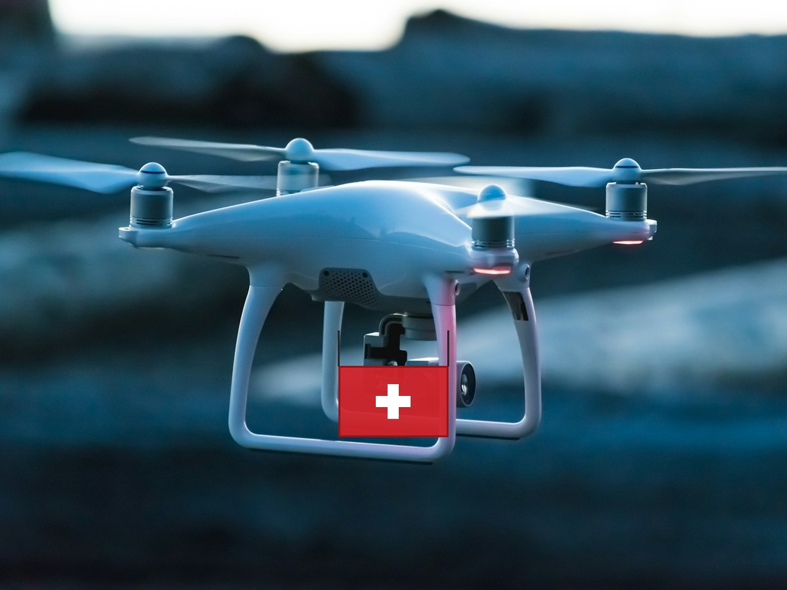
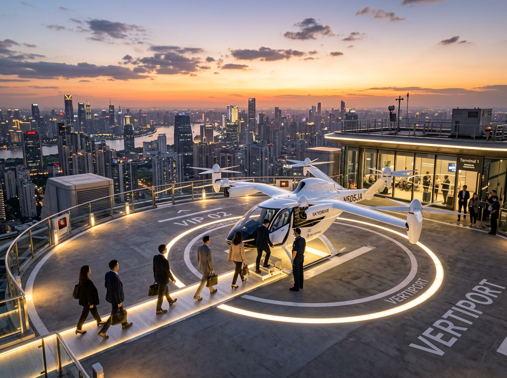

BUSINESS AREA

01
UAM 운항
여객 · 화물 운송사업
우리는 하늘길을 설계하는 데 그치지 않고 직접 운항합니다. 실증기 도입과 시범운항을 시작으로 여객·화물 운송사업, 도서지역 노선까지 UAM 운항사업의 전 단계를 추진합니다.
- 실증기 도입 및 시범운항 (실증 · 시범 단계)
- UAM 여객 운송(에어택시) · 항공 화물 운송사업
- 도서지역 노선 운항 (울릉 · 백령 · 흑산 등)
- 회원제 긴급물류 · 비즈니스 항공 서비스 연계

02
UAM-EMS · 산불 대응
도서 · 오지 항공지원
초기 핵심 사업입니다. 소음과 이착륙 제약에서 자유로운 UAM으로 응급환자 이송(EMS) 체계를 구축하고, 산불 감시·진화 헬기를 UAM으로 대체합니다. 나아가 도서·산간 오지의 항공 공백까지 메웁니다.
- UAM 기반 응급환자 이송(EMS) 서비스
- 산불 감시 · 진화 임무의 헬기 → UAM 대체 운용
- 도심형 · 도서형 긴급 물류 서비스
- 도서지역 · 산간 오지 의료 및 생활물자 항공 지원
- 항공선교 · 오지선교 운항 지원 및 물자 수송
- 수색 · 정찰 등 공공 임무 지원 (B2G)

03
관제 · 안전
솔루션
헬기·민항기 실항적 데이터를 기반으로 회랑의 위험요소를 예측·식별하고, AI 기반 관제 플랫폼으로 하늘길의 안전을 확보합니다.
- 상황관제 · 회랑교통관제 시스템 (CNSi/UATM)
- UAM 모니터링 SaaS · 안전관리시스템(SMS) 플랫폼
- 항적 데이터 기반 비행패턴 분석 및 위험 예측
- 핵심기술 국산화 + 국제규격 준수

04
버티포트
설계 · 운영
운항이 안정화되는 시점에 맞춰 버티포트 인프라로 사업을 확장합니다. 입지 선정부터 설계·시공, 접근 절차 수립, 지상 운용관리까지 버티포트의 생애 전 주기를 다룹니다.
- 버티포트 설계(시공) 및 안전관리
- 버티포트 접근 절차 설계 · 검증 (국제규격 기반)
- 권역감시 및 지상 운용관리 · 버티포트 운영사업
- 버티포트 특화형 스마트시티 계획
05
교육 · 연구
컨설팅
UAM 조종인력 교육훈련 체계 연구를 학회에 발표해온 연구진이 인력 양성 프로그램과 인증 체계를 개발하고, 정부·지자체의 정책 수립을 지원합니다.
- UAM 조종인력 교육훈련 체계 개발
- UAM 안전 · 서비스 인증 프로그램 개발
- 정부 · 지자체 정책연구 및 학술용역
- UAM 산업 컨설팅 · 세미나 · 포럼 운영